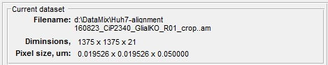
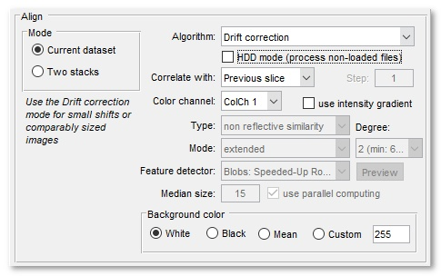
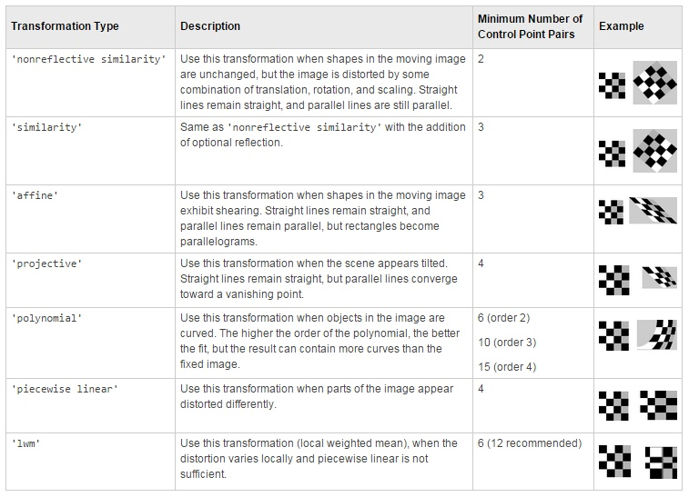
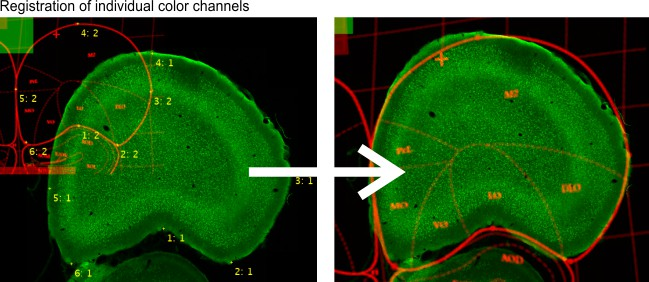
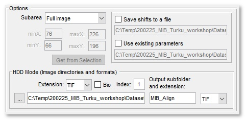
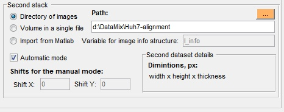

Alignment and Drift Correction
The Alignment and Drift Correction tool can be used either to align slice of the opened dataset or to align two separate datasets.
A demonstration is available in the following videos:
 https://youtu.be/-qwoO5z02aA
https://youtu.be/-qwoO5z02aA
Multi-point landmarks, https://youtu.be/rlXoyZcTpJs
Automatic feature-based
Back to Index --> User Guide --> Menu --> Dataset
Contents
Current dataset panel
The Current dataset panel displays details of the currently opened dataset, such as its filename, dimensions and pixel size

Align panel
The Align panel allows to select main parameters for the alignment and drift correction.

-
The Mode panel - selection of alignment mode:
- Current dataset, align the opened dataset
- Two stacks, align two stacks. The second stack can either be loaded or imported from Matlab
-
Algorithm - selection of method to be used for the alignment:
Drift correction The Drift correction mode is recommended for small shifts or comparably sized images
It is recommended for most situationsTemplate matching The Template matching mode is best when aligning two stacks and the second stack is smaller than the main stack.
It is not recommended for alignment of the currently opened stackAutomatic feature-based  The automatic image alignement based on features (blobs,
regions or corners) detected on consecutive slices.
The automatic image alignement based on features (blobs,
regions or corners) detected on consecutive slices.
The available transfomations are 'similarity', 'affine', or 'projective' (see below for details). The resulting datasets can be cropped to the size and around the position of the first image (the cropped mode) or extended.
Use the Preview button to check the number and positions of the detected points.
Please refer to the documentation of the matchFeatures function of Matlab for more details.Single landmark point The Single landmark point mode is a manual mode, where user marks corresponding areas on two consequetive slices using the brush tool with a spot. During alignment the images will be translated to align the marked areas Landmarks, multi points Landmarks, multi points align datasets based on marked points. The points for alignment can be selected using the Selection layer or Annotations (recommended), where the corresponding points should have the same name. A table below indicates various transformation types:
Three landmark points It is recommended to use the Landmarks, multi points mode instead!
Three landmark points mode is another manual mode, where user should mark three corresponding areas on two consequetive slices using the brush tool. During alignment the images will be translated/scaled/rotated to align the marked areasColor channels, multi points Use landmarks, to register individual color channels. The landmarks are defined using MIB annotations (Segmentation panel->Annotations) as
a) the annotation text is used to identify the corresponding points (i.e. two corresponding points should have the same annotation text);
b) the annotation value is used to identify the fixed color channel (as number 1) and the color channel that needs to be transformed (as number 2)
 -
Correlate with - three different options for the reference slide:
- Previous slice, align each slice to the previous one
- First slice, align all images to the first Z-slice of the sequence; it is good from fixing drift correction problems, when dataset is not changing much
- Relative to, align each slice to another slice with is earlier in the sequence, the number in the Step edit box defines this shift
- Color channel - selection of the color channel to use for the alignment process
- use intensity gradient sometimes better alignement can be achieved when correlating intensity gradients of the original images. Select this checkbox to use the gradients instad of raw images.
-
Background define type of the background after image alignment
- White, all background pixels of the aligned dataset will be white
- Black, all background pixels of the aligned dataset will be black
- Mean, all background pixels of the aligned dataset will be calculated as an average value of all pixels of the original dataset
- Custom, provide a custom intensity for the background colors
Options panel
The Options panel is shown only during alignment of the currently opened dataset.

- use Mask/Selection check this to force the alignment tool to calculate correlation only from the masked or selected areas of the dataset. To benefit from this mode use the brush tool to select the most distict area on the first and last slices; after that interpolate one area to another using the I-key shortcut (or from the Menu->Selection->Interpolate as Shape)
- use subwindow for large uniform images use of subwindow can speed up the alignment significantly. Use the minX, minY, maxX, maxY edit boxes or the Get from Selection button to define the subwindow.
- Save/Load shifts to file using this option it is possible to save and load the translation shifts to a disk
Second stack panel
The Options panel is shown only during alignment of two stacks

- Directory of images select directory where images of the second stack are located
- Volume in a single file, use this option when the second stack is embedded into a single file
- Import from Matlab, if another stack is already open in Matlab it can be imported and aligned with the currently open.
- Automatic mode, when selected the aligment is done automatically. Alternatively, it is possible to provide parameters manually into the ShiftX and ShiftY edit boxes.
Reference and Acknowledgements
The alignment algorithm is based on
- JC Russ, The image processing handbook, CRC Press, Boca Raton, FL, 1994
- JD Sugar, AW Cummings, BW Jacobs, DB Robinson, A Free Matlab Script For Spatial Drift Correction, Microscopy Today — Volume 22, Number 5, 2014 <https://se.mathworks.com/matlabcentral/fileexchange/45453-drifty-shifty-deluxe-m>
- <http://onlinedigeditions.com/publication/?i=223321&p=40>
Back to Index --> User Guide --> Menu --> Dataset